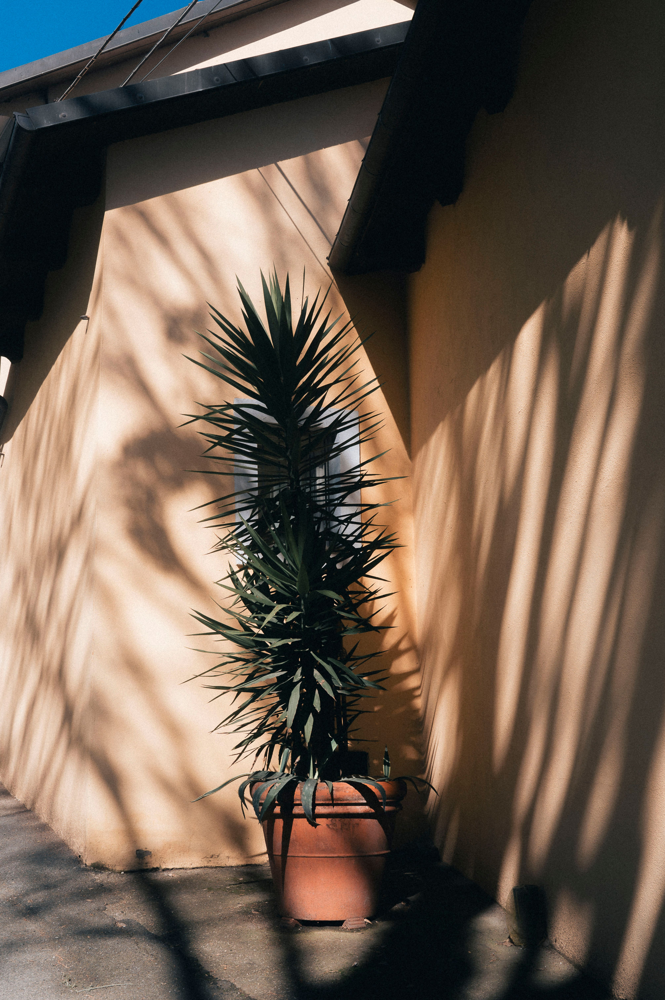

En este artículo
- Introducción
- Identifica correctamente la superficie que vas a pintar
- Escoge un producto adecuado para el clima y la exposición
- Acabado, color y comportamiento en el exterior
- Preparación, imprimación y aplicación correcta
- Cómo prolongar la vida de la pintura exterior
- Método práctico
- Preguntas frecuentes
- Conclusión
Introducción
Descubre cómo elegir pintura para exteriores de casa sin equivocarse con criterios prácticos de tamaño, materiales, mantenimiento, seguridad, funcionalidad y estilo para tomar una decisión adecuada.
Una buena elección empieza por comprender las condiciones reales del espacio y el uso que tendrá cada elemento. Antes de comprar, conviene medir, comparar materiales, revisar cuidados y pensar cómo cambiarán las necesidades con el tiempo.
Identifica correctamente la superficie que vas a pintar
La pintura exterior debe ser compatible con el soporte. Mampostería, hormigón, madera, metal y otros materiales necesitan preparaciones y productos diferentes. Aplicar una pintura adecuada sobre una superficie mal preparada puede provocar descamación, manchas o pérdida prematura de adherencia.
Inspecciona grietas, partes sueltas, humedad, moho y reparaciones antiguas. La pintura no corrige problemas estructurales ni filtraciones. Si existe humedad persistente, identifica su causa antes de cubrirla.
En superficies ya pintadas, comprueba el estado del recubrimiento. Puede ser necesario limpiar, lijar, retirar zonas mal adheridas o utilizar una imprimación compatible. Sigue las instrucciones del fabricante para preparación y tiempos de secado.
Cuando no puedas identificar el material o el recubrimiento existente, consulta a un profesional o realiza pruebas en una zona discreta. La compatibilidad es más importante que elegir el color primero.
Escoge un producto adecuado para el clima y la exposición
Una fachada orientada a sol intenso recibe una carga diferente a una pared protegida. Lluvia, humedad, contaminación, salinidad y cambios de temperatura influyen en el desgaste. Busca productos formulados para exterior y para las condiciones específicas de tu zona.
En ambientes húmedos, la resistencia a hongos y la capacidad del sistema para gestionar vapor pueden ser relevantes. En zonas costeras, la sal y el viento exigen mantenimiento más frecuente. Las superficies horizontales o muy expuestas acumulan más agua que paredes protegidas.
El momento de aplicación también importa. Temperaturas extremas, lluvia inminente o humedad fuera del rango recomendado pueden afectar el curado. Consulta la ficha técnica y planifica varios días de condiciones apropiadas.
No pintes únicamente porque la pared está seca al tacto después de una lluvia. Algunos soportes retienen humedad internamente. Respetar condiciones de aplicación ayuda a que el producto alcance el rendimiento previsto.
Acabado, color y comportamiento en el exterior
Los acabados mates suelen disimular irregularidades y son habituales en determinadas fachadas, mientras opciones con algo más de brillo pueden facilitar limpieza en ciertos elementos. La elección debe ajustarse al soporte y al producto, no solo a una preferencia estética.
Los colores se ven diferentes en exterior por la intensidad de la luz natural. Un tono que parece oscuro en una muestra pequeña puede verse más claro en una fachada amplia. Prueba una superficie suficientemente grande y obsérvala a diferentes horas.
Los tonos muy oscuros absorben más radiación y pueden alcanzar temperaturas mayores. Esto puede ser relevante en determinados materiales y sistemas. Consulta recomendaciones del fabricante, especialmente para superficies que sufren dilataciones.

Considera también tejado, carpinterías, piedra y casas vecinas. Una paleta exterior coherente puede utilizar dos o tres tonos: uno principal, otro para elementos arquitectónicos y un acento limitado.
Preparación, imprimación y aplicación correcta
La limpieza es esencial. Polvo, grasa, sales, moho y pintura suelta reducen adherencia. Utiliza el método apropiado para el soporte y deja secar completamente. Las reparaciones deben curar según las indicaciones del material utilizado.
La imprimación no siempre es obligatoria, pero puede ser necesaria en superficies nuevas, porosas, reparadas, manchadas o cuando se cambia de sistema. Utiliza productos compatibles entre sí, preferiblemente siguiendo una especificación completa del fabricante.
Calcula la cantidad de pintura a partir de superficie y rendimiento indicado, considerando el número de manos. Compra un pequeño margen para retoques y, cuando sea importante mantener uniformidad, intenta utilizar producto del mismo lote o mezclar recipientes según recomendaciones.
Durante la aplicación, trabaja de forma ordenada y evita interrupciones que generen marcas. Protege ventanas, suelos, plantas y elementos cercanos. En altura, prioriza sistemas de acceso seguros y contrata profesionales cuando sea necesario.
Cómo prolongar la vida de la pintura exterior
Una fachada pintada necesita inspección periódica. Detectar pequeñas grietas, zonas descascaradas o manchas de humedad permite intervenir antes de que el problema se extienda. Revisa especialmente encuentros con ventanas, canalones y zonas donde el agua salpica.
Mantén canaletas y desagües funcionando para evitar que el agua recorra continuamente la pared. Poda vegetación que roce la fachada y favorece ventilación donde sea necesario. Muchas fallas atribuidas a la pintura empiezan por problemas de agua.
Limpia siguiendo las instrucciones del producto. Métodos demasiado agresivos pueden dañar el acabado. Si utilizas lavado a presión, verifica que sea apropiado para la superficie y controla distancia y potencia.
Guarda referencia del color, marca y producto utilizados. Cuando llegue el momento de retocar o repintar, esa información facilita mantener compatibilidad. Una buena pintura exterior combina producto adecuado, preparación cuidadosa y mantenimiento preventivo.
Un método práctico para tomar la decisión final
Antes de comprar, escribe tres columnas: necesidades obligatorias, preferencias y límites. En la primera coloca aquello que afecta al funcionamiento; en la segunda, color, estilo o acabados; en la tercera, presupuesto, medidas y mantenimiento. Este ejercicio evita que una característica atractiva haga olvidar un requisito esencial.
Compara varias opciones utilizando los mismos criterios. No te limites a fotografías: revisa dimensiones, composición, instrucciones, garantía y condiciones de uso. Cuando sea posible, observa una muestra físicamente y comprueba cómo se comporta con la luz y los materiales del entorno.
Calcula también el coste de mantener la elección. Productos de limpieza, tratamientos periódicos, repuestos o instalación pueden cambiar el presupuesto real. Una opción razonable es aquella que puedes cuidar correctamente sin convertir el mantenimiento en una carga.
Finalmente, evita decidir con prisa. Una compra que permanecerá años merece una revisión adicional. Si todavía tienes dudas entre dos alternativas, vuelve a la función principal y elige la que resuelva mejor el uso cotidiano.
Seguridad durante los trabajos de pintura exterior
Pintar fachadas puede implicar trabajo en altura, escaleras, andamios y preparación con herramientas. No improvises accesos ni trabajes desde posiciones inestables. En superficies elevadas o de difícil alcance, contratar profesionales es la opción adecuada.
Utiliza protección personal indicada para limpieza, lijado y aplicación, y respeta ventilación y advertencias del producto. Las pinturas antiguas pueden requerir precauciones especiales antes de lijar o retirar capas; si desconoces su composición, busca asesoramiento apropiado.
Cómo calcular la cantidad y organizar el trabajo
Mide la superficie aproximada de las paredes y resta grandes huecos cuando corresponda. Consulta el rendimiento por litro indicado por el fabricante y multiplícalo por el número de manos recomendado. Superficies muy porosas o rugosas pueden consumir más producto que una pared lisa.
Planifica el trabajo por paños completos para mantener uniformidad. Si utilizas varios envases del mismo color, seguir las recomendaciones para mezclarlos puede reducir pequeñas variaciones. No diluyas fuera de los límites indicados con la intención de hacer rendir más la pintura.
Organiza herramientas, protecciones y acceso antes de empezar. Tener todo preparado reduce interrupciones y evita dejar bordes secándose mientras buscas materiales.
Cómo elegir un color que funcione en toda la fachada
Observa la casa desde distintas distancias. El color debe relacionarse con tejado, ventanas, puertas, piedra, pavimentos y vegetación. Una muestra pequeña no representa el efecto de cientos de metros cuadrados, por eso es recomendable pintar un área de prueba visible.
Comprueba el tono con sol y sombra. Las fachadas tienen orientaciones diferentes y el mismo color puede parecer distinto en cada lado. Si utilizas dos colores, decide cuál dominará y reserva el contraste para elementos arquitectónicos concretos.
Consulta normas de la comunidad o restricciones locales antes de realizar cambios importantes. En algunos edificios o zonas existen limitaciones sobre colores y acabados exteriores.
Errores que reducen la duración de la pintura exterior
Pintar sobre suciedad, humedad o capas mal adheridas es uno de los principales. También lo es ignorar grietas y filtraciones esperando que una nueva capa las oculte. La preparación puede ocupar más tiempo que la pintura y es esencial para el resultado.
Aplicar bajo sol extremo, lluvia cercana o temperaturas inadecuadas puede afectar el secado. Respeta ventanas de aplicación. No aceleres la segunda mano si la primera todavía no ha curado según las indicaciones.
Por último, evita guardar problemas para el próximo repintado. Una inspección anual y pequeños retoques compatibles pueden impedir que el deterioro alcance áreas mucho mayores.
No todas las partes exteriores necesitan la misma pintura
La fachada principal, las puertas, las barandillas, la madera y los elementos metálicos pueden requerir productos diferentes. Evita utilizar una única pintura para todo solo porque el color coincide. Cada soporte necesita adherencia, flexibilidad y protección específicas.
En madera exterior, el sistema debe acompañar movimientos naturales y proteger según la especie y exposición. En metal, elimina corrosión y utiliza preparación compatible. En mampostería, considera porosidad y gestión de humedad. Seguir un sistema completo suele ofrecer mejor resultado que mezclar productos elegidos por separado.
Los zócalos próximos al suelo reciben salpicaduras y suciedad más intensa. Pueden necesitar una solución más resistente que zonas altas protegidas. Observa dónde aparecen primero los daños en la pintura antigua: esa información ayuda a identificar áreas que requieren atención adicional.
Elementos como canalones y sellados deben repararse antes de pintar. Una capa nueva no evitará que el agua continúe entrando por una junta defectuosa.
Cuándo conviene contratar a un profesional
Una pared baja y accesible puede ser un proyecto doméstico si conoces la preparación y utilizas productos adecuados. Una fachada de varias plantas, superficies muy deterioradas o problemas de humedad requieren conocimientos y equipos que justifican contratar profesionales.
Pide presupuestos que especifiquen preparación, imprimación, número de manos, producto y protección de zonas cercanas. Comparar solo el precio final puede ocultar diferencias importantes en el trabajo incluido.
Pregunta cómo se resolverán grietas y zonas sueltas y qué condiciones de garantía ofrece el trabajo. Un presupuesto detallado ayuda a evitar que la preparación se reduzca para ahorrar tiempo.
Si el edificio es antiguo o existen revestimientos cuya composición desconoces, evita lijar o retirar material sin evaluar riesgos. Un profesional puede indicar procedimientos seguros y apropiados.
Guarda un registro para futuros retoques
Al terminar, anota marca, línea de producto, código de color, acabado y fecha de aplicación. Guarda también fotografías de las etiquetas. Años después, esta información facilita comprar un producto compatible y entender cómo ha envejecido la superficie.
Conserva una pequeña cantidad solo si el fabricante indica condiciones seguras de almacenamiento. Etiqueta claramente el envase y mantenlo fuera del alcance de niños y mascotas. Si ya no puede utilizarse, gestiona el residuo mediante el sistema correspondiente de tu localidad.
Una revisión anual sencilla ayuda a conservar el acabado y detectar problemas antes de que crezcan.
Preguntas frecuentes
¿Cuál es la mejor manera de empezar?
Empieza definiendo las condiciones reales de uso y comparando opciones según el tema de cómo elegir pintura para exteriores de casa sin equivocarse. Medir, observar y revisar las especificaciones evita muchas decisiones equivocadas.
¿Cuánto tiempo se necesita para ver resultados?
La elección puede hacerse en poco tiempo si las necesidades están claras, pero conviene comparar varias opciones y probar muestras o medidas antes de realizar una compra o intervención definitiva.
¿Qué errores deberían evitarse?
Los errores más frecuentes son elegir solo por apariencia, ignorar medidas y condiciones ambientales, no considerar el mantenimiento y utilizar materiales o sistemas que no son apropiados para el uso previsto.
Conclusión
Cómo elegir pintura para exteriores de casa sin equivocarse es más sencillo cuando la decisión combina función, dimensiones, mantenimiento, seguridad y estética. Comparar opciones con criterios concretos permite evitar compras impulsivas y conseguir un resultado que se adapte mejor a la vida cotidiana.